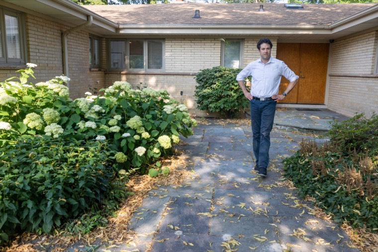
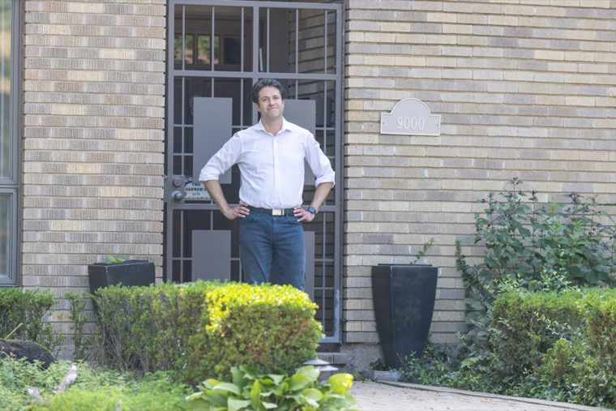

Abba Photo
Chicago · July 2026
One afternoon into dusk, across the city Aaron works: his listings, his streets, the train he rides, the beach at the end of the day. The finished set lands here as the edit completes, each image filed by the job it does.
First set live · the finished set lands here by August 3This set started ten days before the camera came out. A plan page your whole team could read, built from your answers. A route built backwards from one fixed point, eight o'clock at North Avenue Beach, with the day's anchors upstream. A direction we sharpened over dinner: you, comfortable in your environment, and the care you take bringing a home to market. The name on the sign. By the time we shot, the day already knew where it was going. The plan is still here.
Confidence without self-importance, and expertise without losing warmth, curiosity, or humor. The brief, in Aaron's words.
The referral surface. The frame that goes wherever someone asks who to call.
A property just before it goes live. The care before the listing is the pre-listing story, and these frames carry it.
One person in the environment he moves through. For the site, the podcast, the about page.

M02Here because it made us laugh.
M09Here because it made us laugh.Waiting on the platform, riding the cars, the intersections he calls his. Episode ground for the podcast, and the proof he knows this city.
We didn't shoot headshots as their own setup during the session. Each one comes as a crop from the frames above, one per named purpose: Compass, LinkedIn, portals, the newsletter kit. The files are large enough that the crops hold at full quality.
The host portrait.
Cut for the formats they live in.
Aaron has been my family's agent twice, as buyers and as sellers of the same home. I have watched him work the way these frames show him working: prepared, unhurried, certain of the ground. That is why this session exists.
Use this note anywhere it helps. When the finished set lands, shareable versions come cut for your feeds.
Twenty finished images filed by use. Headshots, one per named purpose. The host portrait for the podcast cover. Episode headers and social crops. Web and full resolution downloads for all of it, one link each, on this page, landing with the finished set.